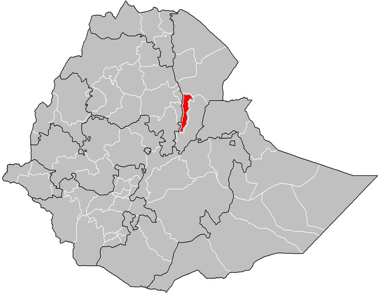

Goldman-Neuman and Hovers · Stone selection at Hadar (Journal of Human Evolution, 2012) ↗
The study shows nearby archaeological localities and compares the geology of the toolstone sources.
Deep dives / Africa & Middle East
At Hadar in Ethiopia, Lucy’s fossil horizon and a later archaeological landscape are separated by hundreds of thousands of years. The nearby Makaamitalu finds offer a close association between stone artifacts and fossils of early Homo.
The map shows the Makaamitalu Basin within the Hadar research area.

Approximate public research locality on a modern terrain map.
The A.L. 666-1 upper jaw is assigned to early Homo and has similarities to Homo habilis. Excavation documented an artifact-bearing horizon in the deposit associated with it. Another Oldowan locality, A.L. 894, lies nearby. [1] [2]
The BKT-3 volcanic ash lies above both artifact occurrences. Published radiometric estimates of approximately 2.33–2.36 million years for that ash, each with uncertainty, anchor the ages of the underlying sediments. [1] [2]
Comparison with geological samples indicates selective use of local stone. An early Homo fossil in the artifact-bearing sequence strengthens the association between this genus and stone tools in the region. The individual responsible for making a particular flake remains unknown. [2] [1]
Placing Hadar’s Makaamitalu localities in human-family chronology depends on bracketing stratified volcanic ash layers (40Ar/39Ar), cosmogenic nuclide burial ages, or paleomagnetic reversals above and below the artifact or footprint horizon rather than dating stone flakes in isolation. Reworking, fluvial transport, and cut-mark/percussion equifinality remain key variables evaluated in every new study. [1] [2]
Rather than identifying a single exclusive ancestor, this locality serves as a tightly constrained chronological anchor that must be compared side-by-side with contemporary Rift, southern, north African, and Eurasian finds inside the playable Human Family map. [1]
Open the source maps for their original detail, legends and dates. Their coverage and reproduction terms belong to the issuing institution.
The study shows nearby archaeological localities and compares the geology of the toolstone sources.
Open this era on global Explore ↗ Open Africa & Middle East atlas ↗ Climate, sea level & ice-sheet context ↗
Sources checked and linked above; geological and historical dating methods follow the primary papers.